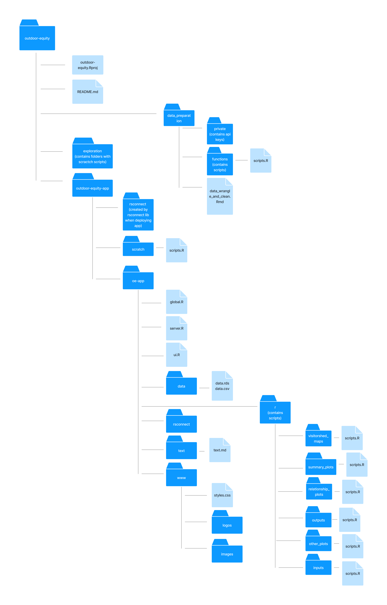

Section 10 Appendix
10.1 Glossary Table
| Abbreviation | Definition | Source |
|---|---|---|
| ACS | American Community Survey | https://www.census.gov/programs-surveys/acs |
| BLM | Bureau of Land Management | https://www.blm.gov/ |
| BOR | Bureau of Reclamation | https://www.usbr.gov/ |
| MEDS | Master of Environmental Data Science | https://bren.ucsb.edu/masters-programs/master-environmental-data-science |
| NPS | National Park Service | https://www.nps.gov/index.htm |
| R1S | Recreation One Stop | https://www.recreation.gov/ |
| UCSB | University of California, Santa Barbara | https://www.ucsb.edu/ |
| USACE | United States Army Corps of Engineers | https://www.usace.army.mil/ |
| USFS | United States Forest Service | https://www.fs.usda.gov/ |
10.2 Functions Table
| Script | Purpose |
|---|---|
| function_acs_deciles_median_income.R | Calculate decile values of California census household median-income |
| function_acs_education.R | Call and calculate education percentages for given geographic area and state |
| function_acs_language.R | Call and calculate language percentages for given geographic area and state |
| function_acs_median_income.R | Call and calculate median-income percentages for given geographic area and state |
| function_acs_race.R | Call and calculate race percentages for given geographic area and state |
| function_acs_top_quartile_education.R | Calculate weighted third quartile value of California census education percentages |
| function_acs_top_quartile_language.R | Calculate weighted third quartile value of California census language percentages |
| function_acs_top_quartile_race.R | Calculate weighted third quartile value of California census race percentages |
| function_ridb_subset-pre2018.R | Subset RIDB data |
| function_ridb_variable_calculate-pre2018.R | Define, standardize, and aggregate values and calculated additional derived variables |
| function_join_ridb_acs.R | Join RIDB and ACS data |
| function_map_ca_data.R | Create dataset for California ZIP code visitorshed map |
| function_map_us_data.R | Create dataset for US State visitorshed map |
| function_ridb_deciles_median_income.R | Create dataset for median-income data relationship plots |
| function_ridb_top_quartile_education.R | Create dataset for education data relationship plots |
| function_ridb_top_quartile_language.R | Create dataset for language data relationship plots |
| function_ridb_top_quartile_race.R | Create dataset for race data relationship plots |
10.3 Metadata Table
| Variable Name | Definition |
|---|---|
| agency | the governing body that manages a type of US public land (i.e. national park, national forest) |
| admin_unit | the parent location or region description that a campsite belongs within |
| park | the name of a campsite |
| aggregated_site_type | type of site at a campsite; a campsite can have multiple site types |
| facility_id | unique id given to a campsite |
| facility_state | the state that a campsite is located in |
| customer_zip | the numeric code of the area from where a visitor lives |
| customer_zip_state | state acronym for home state of visitor |
| customer_zip_state_full | full name of state for home state of visitor |
| total_paid | total amount of dollars paid for a reservation |
| start_date | date when booked reservation begins |
| end_date | date when booked reservation ends |
| order_date | date when reservation was booked and purchased |
| number_of_people | number of people reported when booking reservation |
| length_of_stay | the number of days a visit is; difference of end date from start date |
| booking_window | the number of days a reservation is made before the start of the visit; difference of start date from order date |
| daily_cost | the total amount paid per day for a reservation |
| daily_cost_per_visitor | the total amount paid per day for one person |
| facility_latitude | latitude of the campsite, but note this may not be the center of the campsite |
| facility_longitude | longitude of the campsite, but note this may not be the center of the campsite |
| distance_traveled_m | distance between visitor home zip code and campsite |
| zip_code_population.x | the zip code population when get_acs() from tidycensus pulls in data for education variable. Note we take the average of zip code population x, zip code population y, and zip code population in our data wrangling script |
| asian | estimated percentage of asian population in a zip code |
| black | estimated percentage of black population in a zip code |
| hispanic_latinx | estimated percentage of hispanic latinx population in a zip code |
10.4 Packages Table
| R Package | Version | Purpose |
|---|---|---|
| bslib | 0.3.1 | Web Application (theme) |
| collections | 0.3.5 | Web Application (dictionary) |
| DT | 0.20 | Web Application (tables) |
| formattable | 0.2.1 | Web Application (tables) |
| googlesheets4 | 1.0.0 | Web Application (metadata) |
| here | 1.0.1 | Data cleaning (relative file paths) |
| janitor | 2.1.0 | Data cleaning (data frame) |
| lubridate | 1.7.10 | Data cleaning (dates) |
| plotly | 4.10.0 | Data visualiation (plots) |
| reactlog | 1.1.0 | Web Application (testing) |
| rmapshaper | 0.4.5 | Web Application (load time) |
| rsconnect | 0.8.25 | Web Application (deploy app) |
| scales | 1.1.1 | Data visualiation (plots) |
| sf | 1.0.7 | Data cleaning and visualization (maps) |
| shiny | 1.7.1 | Web Application (build app) |
| shinycssloaders | 1.0.0 | Web Application (plot loader) |
| shinydashboard | 0.7.2 | Web Application (dashboard layout elements) |
| shinydashboardPlus | 2.0.3 | Web Application (box elements) |
| shinyjs | 2.1.0 | Web Application (hide and show boxes in ui) |
| shinyWidgets | 0.6.4 | Web Application (inputs) |
| tidycensus | 1.2.1 | Data acquisition (US census data) |
| tidyverse | 1.3.1 | Data cleaning, analysis, and visualization |
| tigris | 1.6 | Data acquisition (state and ZIP code geometries) |
| tmap | 3.3.2 | Data visualization (maps) |
| vroom | 1.5.7 | Data cleaning (read in data) |
| zipcodeR | 0.3.3 | Data acquisition (state info about ZIP code) |
10.5 Repository Directory Structure

Figure 10.1: Screenshot of the Metadata page of the Outdoor Equity App